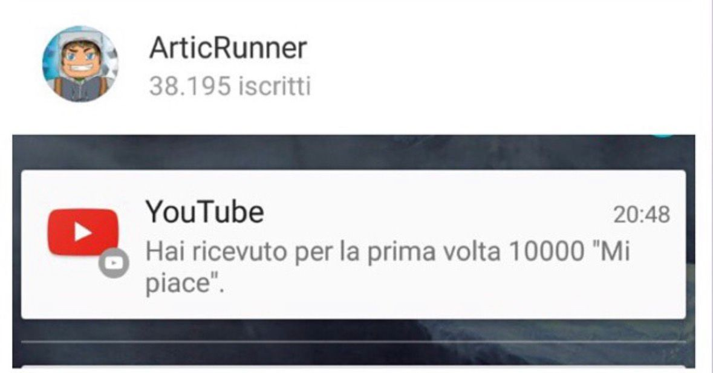
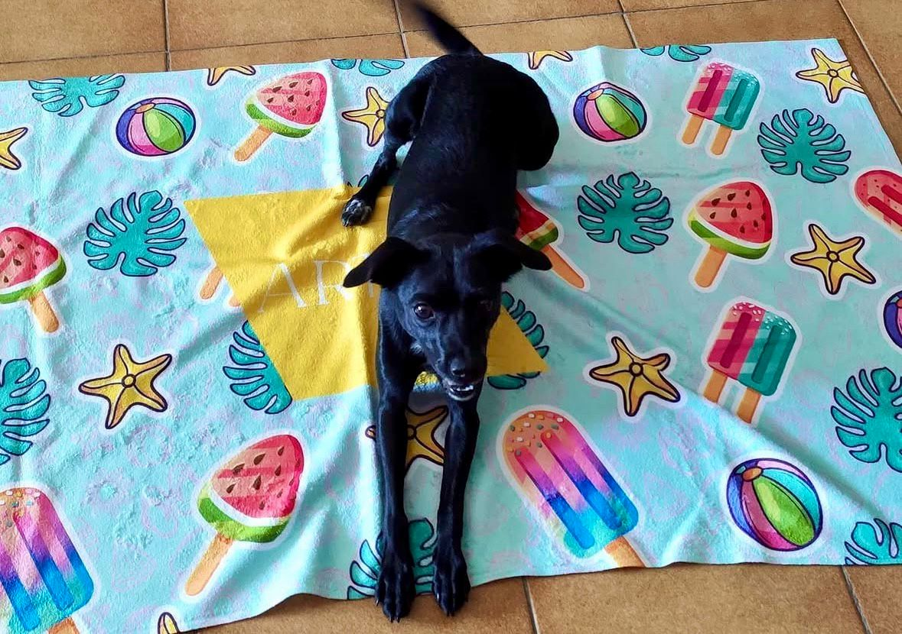
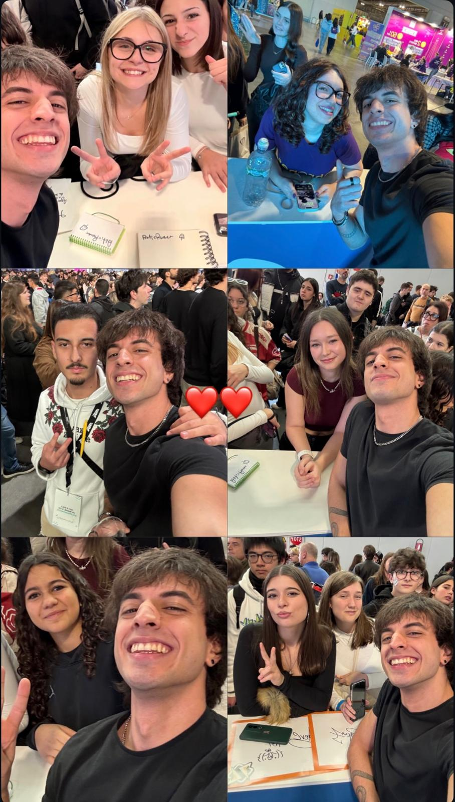

Digital Marketing · Finance · Content
Ideas with momentum.
I turn audience signals, sharp storytelling and commercial thinking into brands people choose to follow.
BASED IN
ITALY
WORKING
GLOBALLY
ITALY
WORKING
GLOBALLY
Community signal70K+subscribers built
AA
SCROLL TO DISCOVER
01PROFILE
Creator instinct.
Analyst’s discipline.
Hi! I’m Alessandro Alesci, a creative digital marketer and content creator with a track record in content, community, and campaign strategy. I built a YouTube community of 70,000 subscribers, produced over 200 videos, and partnered with over 20 brands.
Alongside this, I drive analytical operations and project leadership at Bloomberg Intelligence, translating market data into clear insights and better decisions. I bring that creator-first and data-aware perspective to brands and teams looking for work that is culturally relevant and commercially focused.
My studies in Business Economics, combined with professional certifications in Google Digital Marketing and HubSpot Social Media Marketing, allow me to blend data-driven strategies with engaging storytelling. Looking ahead, I'm eager to further develop my skills and contribute to a growth-oriented company.
Subscribers
Partnerships
Produced

ALESCI
02TOOLKIT & CREDENTIALS
Fluent across
the stack.

✦HubSpot Social Media MarketingVerified
✦Google Fundamentals of Digital MarketingVerified
✦Bloomberg Market ConceptsVerified
CREDENTIALS / 2023—2026


03SELECTED WORK
One perspective.
Four ways I apply it.
Explore a selection of practical projects spanning content, commerce, partnerships and community.
CASE STUDY / 01
Data Analyst,
Copywriter & Social
Media Expert
OBJECTIVE
To bridge raw data analytics with creative storytelling, transforming audience metrics into actionable content strategies that increase engagement, viewer retention, and community monetization across multi-platform digital channels.
PROCESS
Building on my background as a content creator, where I systematically analyzed audience behavior and emerging trends to fuel growth. I have significantly expanded my analytical capabilities through my work at Bloomberg. Today, I analyze complex daily datasets to deliver strategic KPIs and actionable insights to investors, enabling me to bring high-level data rigor to content performance and audience strategy.


CASE STUDY / 02
E-commerce
& Audience Retention
OBJECTIVE
To conceptualize, build, and manage a profitable channel branded e-commerce store while prioritizing deep audience retention, turning every sale into high-lifetime value brand ambassadors through accessible pricing and high product quality.
PROCESS
Instead of pushing high-margin, low-quality merch, I partnered directly with a textile manufacturer in Portugal (Made in Europe) to ensure premium garment quality. I set accessible price points to maximize volume and turn my audience into walking advertisements for the channel. To boost average order value (AOV), I designed tiered seasonal promotional funnels: spending €50 unlocked an exclusive limited-edition beach towel, while spending €70 unlocked both the towel and a custom beach bag. This strategy created strong emotional attachment, resulting in high conversion rates and repeated cart purchases.

CASE STUDY / 03
Influencer
Marketing Campaigns
OBJECTIVE
To execute high-ROI sponsored integrations for leading global brands by seamlessly blending branded messaging into native gaming and entertainment content without disturbing viewer experience.
PROCESS
I collaborate with tier-1 global brands (such as Razer and Wargaming) to produce custom-tailored campaign integrations. World of Warships was my first YouTube campaign: I wrote and produced dedicated gameplay where I genuinely had fun—a very simple idea. By maintaining authentic presentation, the single €700 campaign yielded over 300 paid subscriptions (€10 each), delivering exceptional ROI for the advertiser. This performance transformed a one-off campaign into a recurring long-term partnership expanded onto Twitch.
CASE STUDY / 04
Industry Events
& Public Appearances
OBJECTIVE
To translate digital brand authority into physical presence, strengthening offline community bonds and providing live activation opportunities for partner brands at major international conventions.
PROCESS
Leveraging my standing as a gaming content creator with 70,000+ subscribers, I have been officially invited as a special guest to major pop-culture conventions. My presence spans multiple editions of Milan Games Week (up to the 2026 edition), Etna Comics, and Ticino Games Week. In these environments, I host live stage appearances and interact directly with fans.


AVAILABLE FOR THE NEXT CHAPTER